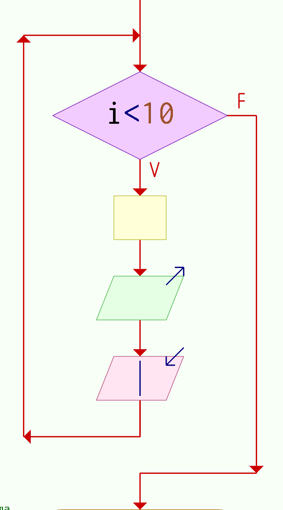

Semana 6
Continuación. Estructuras de repetición I
Ciclo Mientras (While)
En el Mientras y el Para la condición se evalua antes de ingresar al bucle y si esta es verdadera
entonces ingresa al ciclo en caso contrario se sale. Por lo que si la condición es inicialmente falsa, el bucle no
se ejecuta ninguna vez. Para ambos casos, el bucle se repite mientras la condición sea verdadera.

Ciclo para (for)
Ciclo repetir-hasta
En el repetir-hasta la condición se evalua despues de la ejecución del bucle.
Por lo que, el bucle siempre se ejecuta por lo menos una vez. El bucle se repite hasta que
la condición sea verdadera.
Practica
Escriba el pseudocodigo de un algoritmo que imprima los números del $100$ al $0$ en orden decreciente.
Practica
Escriba un pseudocodigo que imprima los números pares entre $0$ y $100$.
Practica
Escriba el pseudocodigo de un algoritmo que dtermine la suma de todos los números pares comprendidos
entre $20$ y $100$ ambos inclusive.
Practica
Escriba el pseudocodigo de un algoritmo que calcule e imprima la suma de los
cuadrados de los números pares entre $0$ y $100$
Practica
Escribir el pseudocódigo de un algoritmo que lea dos números naturales y determine el producto
de estos usando sólo sumas. Imprima el resultado.
Practica
Escribir el pseudocódigo de un algoritmo que lea los salarios de $10$ profesores de la UMAR, campus
Huatulco y obtenga e imprima el total de la nómina.
Practica
Escribir el pseudocódigo de un algoritmo que solicite al usuario un número natural $n$. Luego solicite al usuario $n$
números enteros y determine e imprima solamente la suma de los números positivos introducidos.
Práctica
Escribir el pseudocódigo de un algoritmo que imprima los múltiplos de siete que se encuentren entre $1$ y $150$.
Práctica
Escribir el pseudocódigo de un algoritmo que sume números enteros ingresados por el usuario y se detenga hasta que
la suma sea mayor que $100$. Imprimir la suma final.
Práctica
Escribir el pseudocódigo de un algoritmo que lea números reales ingresados por el usuario hasta que el número introducido
sea cero y calcule el producto (multiplicación) es estos números por uno. Si el primer número ingresado es cero que
que imprima $1$.
Práctica
Escribir el pseudocódigo de un algoritmo que lea números enteros ingresados por el usuario y sume los números pares y
multiplique los números impares, dejar de solicitar números hasta que la suma sea mayor que 50 o el producto sea mayor
que 150. Imprimir la suma y el producto final.
Práctica
Escribir el pseudocódigo de un algoritmo que lea números enteros ingresados por el usuario y sume los números pares y
multiplique los números impares, dejar de solicitar números hasta que la suma sea mayor que 50 y el producto sea mayor
que 150. Imprimir la suma y el producto final.
Práctica
Escribir el pseudocódigo de un algoritmo que lea las calificaciones de los alumnos del curso de Programación,
calcule e imprima el promedio del grupo, el número de aprobados y reprobados; se debe dejar de pedir calificaciones cuando
se introduzca un número negativo.
Práctica
Escribir el pseudocódigo de un algoritmo que solicite un número entero positivo $n$ y un número real $x$, unicamente
utilizando multiplicaciones determine e imprima el valor de $x^{n}.$
Práctica
Escribir el pseudocódigo de un algoritmo que solicite un número entero positivo, determine e imprima
cuántos dígitos tiene.
Práctica
Escribir el pseudocódigo de un algoritmo que solicite un número entero positivo,
determine e imprima si es un número primo o no.
Práctica
Escribir el pseudocódigo de un algoritmo que solicite al usuario un número entero positivo $n$ y posteriormente
lea $n$ números reales, determina e imprime cuántos de estos son positivos, cuántos negativos
y cuántos igual a cero.